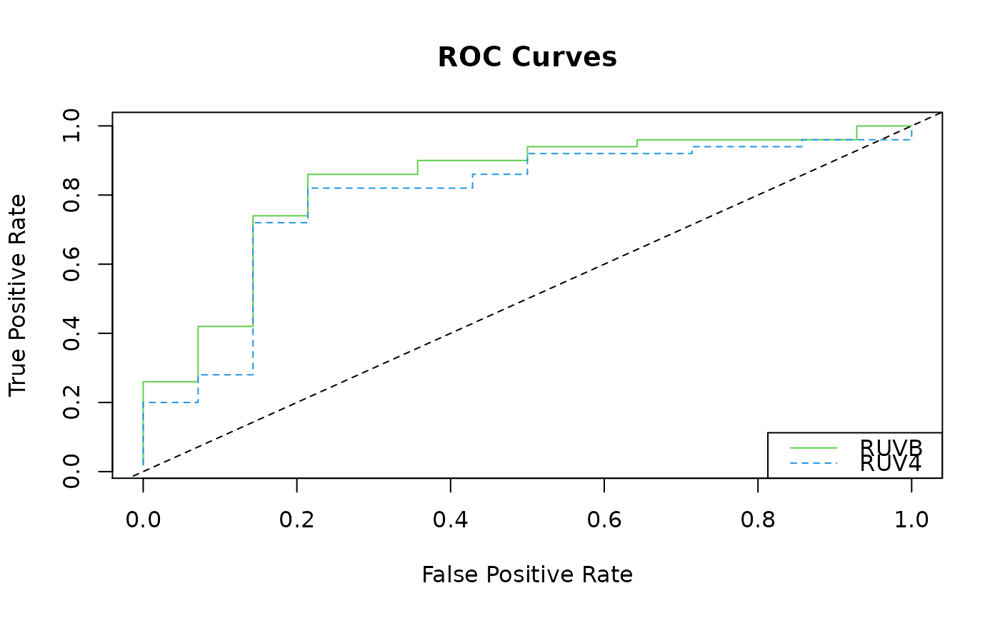

This function will take posterior draws from a Bayesian factor analysis (or, more generally, a Bayesian imputation approach) to propagate uncertainty when adjusting for unwanted variation. Useful summaries are returned, such as local false sign rates and posterior means.
ruvb(Y, X, ctl, k = NULL, fa_func = bfa_gs_linked, fa_args = list(), cov_of_interest = ncol(X), include_intercept = TRUE, return_mcmc = FALSE, prior_fun = NULL, prior_args = list(), return_log = NULL, pad_na = TRUE)
| Y | A matrix of numerics. These are the response variables where each column has its own variance. In a gene expression study, the rows are the individuals and the columns are the genes. |
|---|---|
| X | A matrix of numerics. The covariates of interest. |
| ctl | A vector of logicals of length |
| k | A non-negative integer.The number of unobserved confounders. If not specified and the R package sva is installed, then this function will estimate the number of hidden confounders using the methods of Buja and Eyuboglu (1992). |
| fa_func | A function that takes as input matrices named
|
| fa_args | A list of additional parameters to pass to
|
| cov_of_interest | A vector of positive integers. The column numbers of the covariates in X whose coefficients you are interested in. The rest are considered nuisance parameters and are regressed out by OLS. |
| include_intercept | A logical. If |
| return_mcmc | A logical. Should we return the MCMC draws? |
| prior_fun | A function. This should take as input a matrix
called |
| prior_args | A list of arguments to pass to |
| return_log | A logical. Does |
| pad_na | A logical. Should the indexing of the posterior summaries
be the same as the data ( |
A list with with some or all of the following elements.
means The posterior means of the betas.
sd The posterior standard deviations of the betas.
medians The posterior medians of the betas
upper The posterior 97.5th percentile of the betas.
lower The posterior 2.5th percentile of the betas.
lfsr1 The empirical local false sign rate. This just
counts the number of betas that are less than 0 before
calculating lfsr. For the most significant genes, you should probably
use lfsr2.
lfsr2 The normal approximation for local false sign
rate. This approximates the posterior of each beta by a normal,
then uses this approximation to calculate lfsr.
t The posterior means divided by the posterior standard
deviations.
svalues1 The svalues from lfsr1. For the most significant
genes, you should probably use svalues2.
svalues2 The svalues from lfsr2.
betahat_post An array of the posterior samples of the
betas. Only returned if return_mcmc is TRUE.
fa The raw output from whatever factor analysis is
used. Only returned if return_mcmc is TRUE.
The model is $$Y = XB + ZA + E,$$ where \(Y\) is a matrix of responses (e.g. log-transformed gene expression levels), \(X\) is a matrix of covariates, \(B\) is a matrix of coefficients, \(Z\) is a matrix of unobserved confounders, \(A\) is a matrix of unobserved coefficients of the unobserved confounders, and \(E\) is the noise matrix where the elements are independent Gaussian and each column shares a common variance. The rows of \(Y\) are the observations (e.g. individuals) and the columns of \(Y\) are the response variables (e.g. genes).
I have three versions of Bayesian factor analyses that I
recommend. The first is bfa_gs_linked. This version
links the variances between the factors and observations and is the
version used in Gerard and Stephens (2016). This version appears to
work the best in practice and is thus the default. The second,
bfa_gs, is the same as the first except it does not
link the variances between the factors and the observations. The
last is bfa_wrapper, which is just a wrapper for the R
package bfa. The main thing about this version is that they do not
use a hierarchical prior on the variances.
The user can specify their own Bayesian factor analysis (or
Bayesian model for missing data) using the fa_func and
fa_args parameters. To see instructions and examples on how
to do this, type the following in R:
utils::vignette("customFA", package = "vicar"). If you see
an error in the above code, then this probably means that the
vignettes were not built during installation. In which case, see
https://github.com/dcgerard/vicar#vignettes.
The user can also specify their own priors for the second step of
RUVB. To do so, use the parameters prior_fun and
prior_args. To see instructions and an example on how to do
this, run the following code in R:
utils::vignette("custom_prior", package = "vicar"). Again,
if you see an error in the above code then you probably need to
build the vignettes. Go to
https://github.com/dcgerard/vicar#vignettes for
instructions. If a prior is not specified, then the default is to
use a non-informative uniform prior. Though improper, using this
prior will result in a proper posterior no matter the model for the
unwanted variation.
bfa_gs, bfl, and
bfa_wrapper for implemented Bayesian factor analyses.
library(vicar) ## Generate data and controls --------------------------------------------- set.seed(345) n <- 13 p <- 101 k <- 2 q <- 3 is_null <- rep(FALSE, length = p) is_null[1:51] <- TRUE ctl <- rep(FALSE, length = p) ctl[1:37] <- TRUE X <- matrix(stats::rnorm(n * q), nrow = n) B <- matrix(stats::rnorm(q * p), nrow = q) B[2, is_null] <- 0 Z <- X %*% matrix(stats::rnorm(q * k), nrow = q) + matrix(rnorm(n * k), nrow = n) A <- matrix(stats::rnorm(k * p), nrow = k) E <- matrix(stats::rnorm(n * p, sd = 1 / 2), nrow = n) Y <- X %*% B + Z %*% A + E ## Fit RUVB --------------------------------------------------------------- ## I use a much smaller number of samples than reccommended for time. ruvbout <- ruvb(Y = Y, X = X, k = k, ctl = ctl, cov_of_interest = 2, include_intercept = FALSE, fa_args = list(nsamp = 1000))#> Progress: #> | | | 0% | | | 1% | |= | 1% | |= | 2% | |== | 2% | |== | 3% | |== | 4% | |=== | 4% | |=== | 5% | |==== | 5% | |==== | 6% | |===== | 6% | |===== | 7% | |===== | 8% | |====== | 8% | |====== | 9% | |======= | 9% | |======= | 10% | |======= | 11% | |======== | 11% | |======== | 12% | |========= | 12% | |========= | 13% | |========= | 14% | |========== | 14% | |========== | 15% | |=========== | 15% | |=========== | 16% | |============ | 16% | |============ | 17% | |============ | 18% | |============= | 18% | |============= | 19% | |============== | 19% | |============== | 20% | |============== | 21% | |=============== | 21% | |=============== | 22% | |================ | 22% | |================ | 23% | |================ | 24% | |================= | 24% | |================= | 25% | |================== | 25% | |================== | 26% | |=================== | 26% | |=================== | 27% | |=================== | 28% | |==================== | 28% | |==================== | 29% | |===================== | 29% | |===================== | 30% | |===================== | 31% | |====================== | 31% | |====================== | 32% | |======================= | 32% | |======================= | 33% | |======================= | 34% | |======================== | 34% | |======================== | 35% | |========================= | 35% | |========================= | 36% | |========================== | 36% | |========================== | 37% | |========================== | 38% | |=========================== | 38% | |=========================== | 39% | |============================ | 39% | |============================ | 40% | |============================ | 41% | |============================= | 41% | |============================= | 42% | |============================== | 42% | |============================== | 43% | |============================== | 44% | |=============================== | 44% | |=============================== | 45% | |================================ | 45% | |================================ | 46% | |================================= | 46% | |================================= | 47% | |================================= | 48% | |================================== | 48% | |================================== | 49% | |=================================== | 49% | |=================================== | 50% | |=================================== | 51% | |==================================== | 51% | |==================================== | 52% | |===================================== | 52% | |===================================== | 53% | |===================================== | 54% | |====================================== | 54% | |====================================== | 55% | |======================================= | 55% | |======================================= | 56% | |======================================== | 56% | |======================================== | 57% | |======================================== | 58% | |========================================= | 58% | |========================================= | 59% | |========================================== | 59% | |========================================== | 60% | |========================================== | 61% | |=========================================== | 61% | |=========================================== | 62% | |============================================ | 62% | |============================================ | 63% | |============================================ | 64% | |============================================= | 64% | |============================================= | 65% | |============================================== | 65% | |============================================== | 66% | |=============================================== | 66% | |=============================================== | 67% | |=============================================== | 68% | |================================================ | 68% | |================================================ | 69% | |================================================= | 69% | |================================================= | 70% | |================================================= | 71% | |================================================== | 71% | |================================================== | 72% | |=================================================== | 72% | |=================================================== | 73% | |=================================================== | 74% | |==================================================== | 74% | |==================================================== | 75% | |===================================================== | 75% | |===================================================== | 76% | |====================================================== | 76% | |====================================================== | 77% | |====================================================== | 78% | |======================================================= | 78% | |======================================================= | 79% | |======================================================== | 79% | |======================================================== | 80% | |======================================================== | 81% | |========================================================= | 81% | |========================================================= | 82% | |========================================================== | 82% | |========================================================== | 83% | |========================================================== | 84% | |=========================================================== | 84% | |=========================================================== | 85% | |============================================================ | 85% | |============================================================ | 86% | |============================================================= | 86% | |============================================================= | 87% | |============================================================= | 88% | |============================================================== | 88% | |============================================================== | 89% | |=============================================================== | 89% | |=============================================================== | 90% | |=============================================================== | 91% | |================================================================ | 91% | |================================================================ | 92% | |================================================================= | 92% | |================================================================= | 93% | |================================================================= | 94% | |================================================================== | 94% | |================================================================== | 95% | |=================================================================== | 95% | |=================================================================== | 96% | |==================================================================== | 96% | |==================================================================== | 97% | |==================================================================== | 98% | |===================================================================== | 98% | |===================================================================== | 99% | |======================================================================| 99% | |======================================================================| 100% #> Complete!ruvblfsr <- ruvbout$lfsr2 ## Compare to CATE/RUV4 --------------------------------------------------- ruv4out <- cate::cate.fit(Y = Y, X.primary = X[, 2, drop = FALSE], X.nuis = X[, -2, drop = FALSE], r = k, fa.method = "pc", adj.method = "nc", nc = ctl) ruv4p <- ruv4out$beta.p.value ruv4p[ctl] <- NA ## Plot ROC curves -------------------------------------------------------- order_ruv4 <- order(ruv4p, na.last = NA) order_ruvb <- order(ruvblfsr, na.last = NA) nnull <- sum(is_null[!ctl]) nsig <- sum(!is_null[!ctl]) fpr4 <- cumsum(is_null[order_ruv4]) / nnull tpr4 <- cumsum(!is_null[order_ruv4]) / nsig fprb <- cumsum(is_null[order_ruvb]) / nnull tprb <- cumsum(!is_null[order_ruvb]) / nsig graphics::plot(fprb, tprb, type = "l", xlab = "False Positive Rate", ylab = "True Positive Rate", main = "ROC Curves", col = 3)